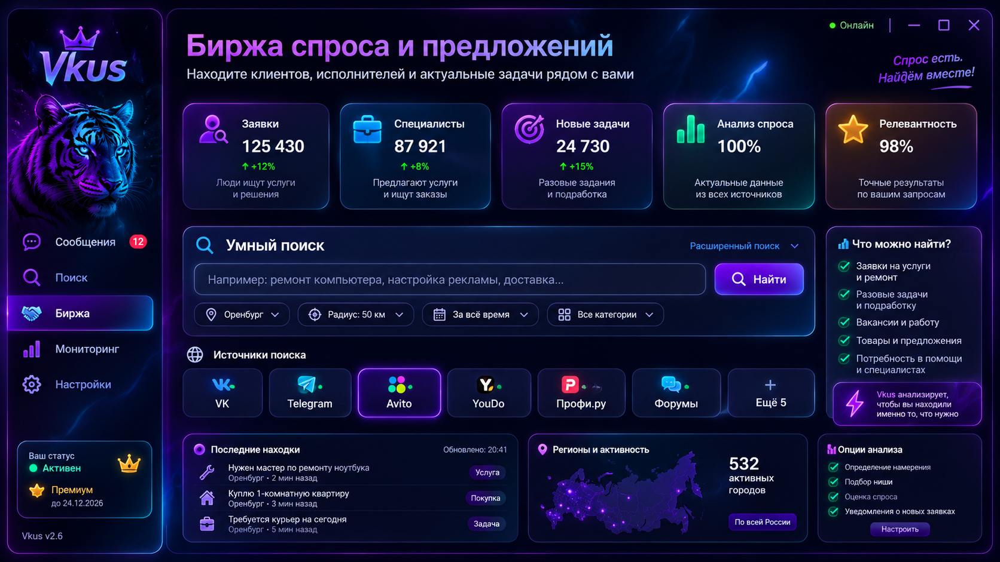

Источники Vkus
Визуальная вкладка повторяет утверждённый макет. Подключение источников и получение актуальных публикаций — отдельный этап интеграции; демонстрационные цифры и карточки на фоне не являются результатами реального поиска.

Визуальная вкладка повторяет утверждённый макет. Подключение источников и получение актуальных публикаций — отдельный этап интеграции; демонстрационные цифры и карточки на фоне не являются результатами реального поиска.